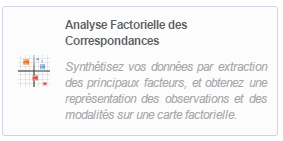
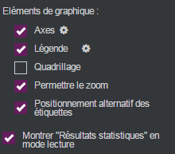

Réaliser une analyse factorielle des correspondances
Analyse Factorielle des Correspondances : il s’agit d’une Simplification de données multidimensionnelles par l’extraction de facteurs qui résument l’information initiale apportée par des variables nominales en situant les observations par rapports à ces informations.
EXEMPLE :
- Dans les enquêtes, les comportements et l’identité des répondants sont décrits par des modalités qui les caractérisent. L’analyse factorielle des correspondances multiples permet d’identifier des profils et de mettre en évidence les associations remarquables en synthétisant les données selon leurs affinités.
- L’analyse lexicale permet d’associer à chaque réponse aux questions ouvertes d’un questionnaire ou à chaque fragment du corpus analysé la liste des mots significatifs (ou les plus fréquents) qui les composent. L’analyse factorielle permet alors de mette en évidence les termes les plus fréquemment associés en définissant des facteurs correspondant à ces « constellations ». On peut ainsi résumer la variété des situations ou des formes linguistiques par des profils qui différencient les répondants ou des thèmes présents dans le texte analysé.
Pour réaliser une analyse factorielle des correspondances (AFC), procédez comme suit :
-
Cliquez sur le bouton
 .
. -
Sélectionnez Analyse avancée.
-
Cliquez sur Analyse Factorielle des Correspondances.

-
Faites un drag & drop des variables en lignes et des variables en colonnes depuis la liste des variables disponibles.

Une fois l’AFC réalisée, il est possible de changer les variables en sélectionnant l’analyse et en cliquant sur ou en faisant clic droit éditer sur l’analyse.
 OPTIONS ET ANALYSE DE L'AFC
OPTIONS ET ANALYSE DE L'AFC
Dans l’onglet option, catégorie calcul, trois options spécifiques aux cartes apparaissent.
-
Taille proportionnelle aux effectifs : permet d’affecter à chaque bulle une taille selon l’effectif de la modalité représentée.
-
Uniquement les éléments significatifs : permet d’afficher sur la carte seulement les modalités les plus significatives (selon les tests en vigueur), les autres n’apparaissent pas afin de rendre la lecture plus synthétique.
-
Relier les couples surreprésentés : permet d’afficher sur la carte les couples de modalités surreprésentées en les reliant.
Dans le cas d’une AFC, il peut y avoir beaucoup de variables ce qui rend la lisibilité de la carte difficile. Vous pouvez zoomer sur certaines parties afin de voir de plus près une zone intéressante lors de la prévisualisation.
Pour zoomer, il faut sélectionner permettre le zoom dans les éléments du graphique.

Dans la prévisualisation il faut placer le curseur sur une partie de la carte, cliquer glisser et faire un carré autour de la zone à zoomer. Ensuite il sera possible d’annuler le zoom en cliquant sur le bouton  .
.
Trois productions des cartes sont utiles à la compréhension des résultats affichés :
-
La carte factorielle sur les deux premières composantes.
-
Les contributions des variables aux axes factoriels.
-
Le pourcentage de variance expliquée par les axes factoriels.
Il est possible d’afficher plus d’analyses concernant les modalités de l’analyse (les contributions, les coordonnées et les cosinus carrés des modalités) en sélectionnant résultats statistiques en dessous de la carte. Ceux-ci pourront être exportés vers Excel en cliquant sur le bouton  .
.

Les résultats statistiques peuvent être affichés lors de la prévisualisation en sélectionnant montrer « Résultats statistiques » en mode lecture dans les éléments de graphique.


Lecture de la carte factorielle :
À l’écart de la carte se trouve les modalités dites « originales », comme les personnels de service, la gastronomie ou le rafting/nage. Au centre de la carte se trouve les modalités dites « sans surprises » comme les professions libérales/ cadres, les retraités, le farniente ou la promenade à pied. Cela signifie que les professions libérales/ cadres et les retraités pratiquent des activités voisines de celles de la population interrogée et que le farniente et la promenade à pied reflètent les poids de chaque CSP de l’échantillon.
Lorsque deux modalités sont proches l’une de l’autre, cela indique une attraction. Cela signifie que les effectifs répondant aux deux conditions sont plus nombreux que l’effectif qui aurait résulté d'une répartition proportionnelle. Dans l’exemple ci-dessus les individus qui sont « Retraités » ont également choisi l’activité « Promenade à pied ».
Lorsque deux modalités sont éloignées l’une de l’autre, cela indique une répulsion. Dans l’exemple ci-dessus les individus qui sont des « Personnels de service » n’ont pas choisi l’activité « Rafting/Nage ».
La contribution des modalités aux axes factoriels :
Les poids de chaque modalité sur les axes permettent de comprendre la lecture de la carte.
Dans l’exemple ci-dessus, l’axe 1 pèse pour 43% et l’axe 2 pour 20,3%. L’axe 1 permet donc de comprendre la carte.
À droite, on trouve des activités plutôt coûteuses pratiquées par des CSP à forts revenus, comme la gastronomie, le tennis ou les visites. À gauche, ce sont plutôt des activités gratuites, comme la nage, la randonnée ou le farniente pratiquées par des CSP aux revenus modestes.
Le pourcentage de variance expliquée :
Sur chaque axe de la carte figurent les pourcentages du lien reliant les données, cela correspond à la somme des attractions-répulsions. Plus la somme des pourcentages des axes est forte, plus la carte représente la réalité. Pour l’AFC à partir du seuil de 50% la restitution est de bonne qualité.
Dans l’exemple ci-dessus, l’axe 1 pèse pour 43% et l’axe 2 pour 20,3%, donc la carte restitue 63,3% de l’information, il s’agit donc d’une bonne représentation.